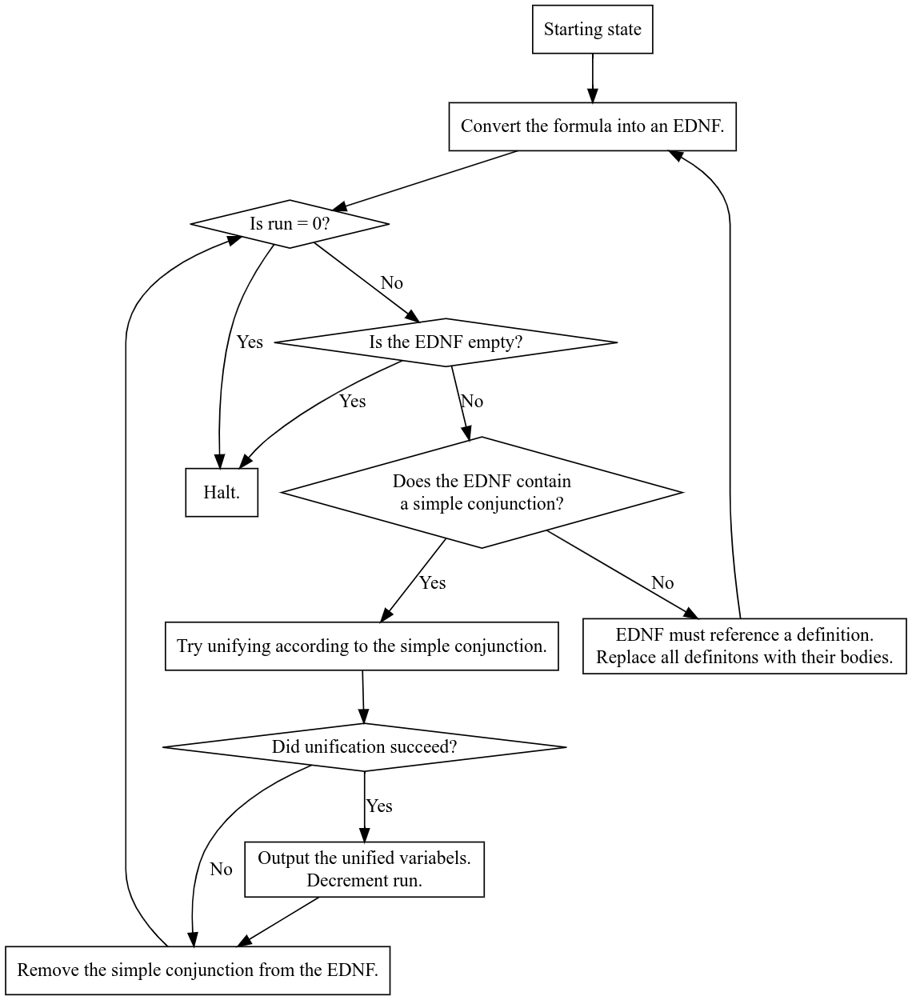

13 First-Order miniKanren
This section describes miniKanren in terms of its representation.
| (define (apply-until-fixpoint f x) |
| (let ((y (f x))) |
| (if (equal? y x) |
| x |
| (apply-until-fixpoint f y)))) |
Here are the definitions for two types of occurrence checks: occurs-in-exp? and occurs-in-sexp?, as well as two replacement checks: replace-in-exp and replace-in-sexp.
Their plural counterparts, occurs-in-exps and occurs-in-sexps, are trivially implemented using any, so they are defined in the appendix.
| (define (occurs-in-exp? sym exp) |
| (match exp |
| (`(conde . ,exps*) |
| (any (lambda (exps) (occurs-in-exps? sym exps)) exps*)) |
| |
| (`(fresh ,vars . ,exps) |
| (and (not (any-occurs-in-sexp? vars sym)) |
| (occurs-in-exps? sym exps))) |
| |
| (`(,rel . ,sexps) |
| (occurs-in-sexps? sym sexps)))) |
| (define (occurs-in-sexp? sym sexp) |
| (or (equal? sym sexp) |
| (match sexp |
| (`(,h . ,t) (match h |
| ('quasiquote (qq-occurs-in-sexp? sym t)) |
| ('quote #f) |
| (_ (or (occurs-in-sexp? sym h) |
| (occurs-in-sexp? sym t))))) |
| (_ #f)))) |
13.1 The problem with quasiquote
Quasiquote means that I need to introduce mutual recursion. You can think of it like recurring with a boolean flag signaling that the s-expression in question is part of a larger, quasiquoted s-expression, so the code should deal with the case of unquote.
| (define (qq-occurs-in-sexp? sym sexp) |
| (match sexp |
| (`(,h . ,t) (match h |
| ('unquote (occurs-in-sexp? sym t)) |
| ('quote #f) |
| (_ (or (qq-occurs-in-sexp? sym h) |
| (qq-occurs-in-sexp? sym t))))) |
| (_ #f))) |
13.2 Using gensym to create copies of relations with no name conflicts
| (define (replace-in-exp replacements exp) |
| (match exp |
| (`(conde . ,exps*) |
| `(conde . ,(map* (lambda (exp) |
| (replace-in-exp replacements exp)) exps*))) |
| |
| (`(fresh ,vars . ,exps) |
| (let ((gensyms (map (lambda (var) (gensym)) vars))) |
| `(fresh ,gensyms . ,(map (lambda (exp) (replace-in-exp (append (zip vars gensyms) replacements) exp)) exps)))) |
| |
| (`(,rel . ,args) |
| `(,rel . ,(map (lambda (arg) |
| (replace-in-sexp replacements arg)) args))))) |
| (define (replace-in-sexp replacements sexp) |
| (match sexp |
| (`(,h . ,t) (match h |
| ('quote sexp) |
| ('quasiquote (cons h (qq-replace-in-sexp replacements t))) |
| (_ (cons (replace-in-sexp replacements h) |
| (replace-in-sexp replacements t))))) |
| |
| (_ (match (lookup sexp replacements) |
| (`(just ,replacement) replacement) |
| ('(nothing) sexp))))) |
Given a list of pairs replacements, and an s-expression sexp, return a copy of the s-expression, except that any symbol appearing in the left-hand side of replacements is replaced by the associated right-hand side.
| (define (qq-replace-in-sexp replacements sexp) |
| (match sexp |
| (`(,h . ,t) (match h |
| ('unquote (cons h (replace-in-sexp replacements t))) |
| ('quote (cons h t)) |
| (_ (cons (qq-replace-in-sexp replacements h) |
| (qq-replace-in-sexp replacements t))))) |
| |
| (_ sexp))) |
As always, quasiquotation needs to be dealt with, so a separate mutually recursive call is made with the qq- prefix to track that the procedure is in a quasiquoted environment.
13.3 Algorithm design

| (define (replace-definitions defrels exps) |
| (append-map |
| (lambda (exp) |
| (match exp |
| (`(conde . ,exps*) |
| `((conde . ,(map (lambda (exps) (replace-definitions defrels exps)) exps*)))) |
| |
| (`(fresh ,vars . ,exps) |
| `((fresh ,vars ,(replace-definitions defrels exps)))) |
| |
| (`(== ,u ,v) |
| `((== ,u ,v))) |
| |
| (`(,rel . ,args) (let ((defrel (car (filter |
| (lambda (defrel) |
| (match defrel |
| (`(defrel (,name . ,params) . ,exps) |
| (equal? rel name)))) defrels)))) |
| |
| (match defrel |
| (`(defrel (,name . ,params) . ,exps) |
| (map (lambda (exp) (replace-in-exp (zip params args) exp)) exps))))))) |
| exps)) |
Given a list of relation definitions defrels, and a list of miniKanren expressions exps,
return a new list of expressions where all named relations have been replaced with their definition.
| (define (is-simple-conjunction? conjunction) |
| (all (lambda (exp) (match exp |
| (`(== ,u ,v) #t) |
| (_ #f))) conjunction)) |
| (define (unify-exps exps) |
| (match exps |
| ('() '()) |
| (`((== (,l1 . ,r1) (,l2 . ,r2)) . ,rest) (unify-exps `((== ,l1 ,l2) |
| (== ,r1 ,r2) . ,rest))) |
| (`((== ,u ,v) . ,rest) (match `(,(occurs-in-sexp? u v) ,(occurs-in-sexp? v u)) |
| ('(#t #t) (unify-exps rest)) |
| ('(#t #f) #f) |
| ('(#f #t) #f) |
| ('(#f #f) (unify-exps (match `(,(occurs-in-exps? u rest) ,(occurs-in-exps? v rest)) |
| ('(#t #t) (replace-in-exps u v rest)) |
| ('(#t #f) (replace-in-exps u v rest)) |
| ('(#f #t) (replace-in-exps v u rest)) |
| ('(#f #f) rest)))))) |
| (`((fresh ,vars . ,exps) . ,rest) |
| `((fresh ,vars . ,(unify-exps exps)) . ,(unify-exps rest))) |
| |
| (`((conde . ,exps*) . ,rest) |
| `((conde . ,(map (lambda (exps) (unify-exps exps)) exps*)) . ,(unify-exps rest))) |
| |
| (`((,relation . ,args) . ,rest) `((,relation . ,args) . ,(unify-exps rest))))) |